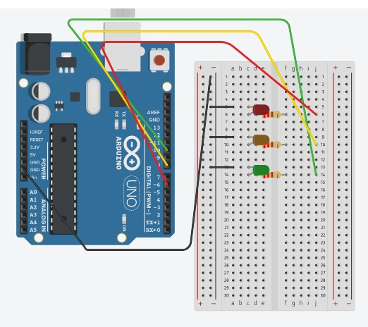
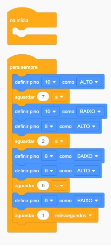

EXEMPLO DE SEMAFORO SIMPLES
EXEMPLO DE CIRCUITO SEMAFORO SIMPLES

tinker cad
DIAGRAMA DE BLOCOS DO SEMAFORO SIMPLES

tinker cad
TEXTO DO CODIGO C++ DO SEMAFORO SIMPLES
// C++ code
//
void setup()
{
pinMode(10, OUTPUT);
pinMode(8, OUTPUT);
pinMode(6, OUTPUT);
}
void loop()
{
digitalWrite(10, HIGH);
delay(7000); // Wait for 7000 millisecond(s)
digitalWrite(10, LOW);
digitalWrite(8, HIGH);
delay(2000); // Wait for 2000 millisecond(s)
digitalWrite(8, LOW);
digitalWrite(6, HIGH);
delay(9000); // Wait for 9000 millisecond(s)
digitalWrite(6, LOW);
delay(1); // Wait for 1 millisecond(s)
}